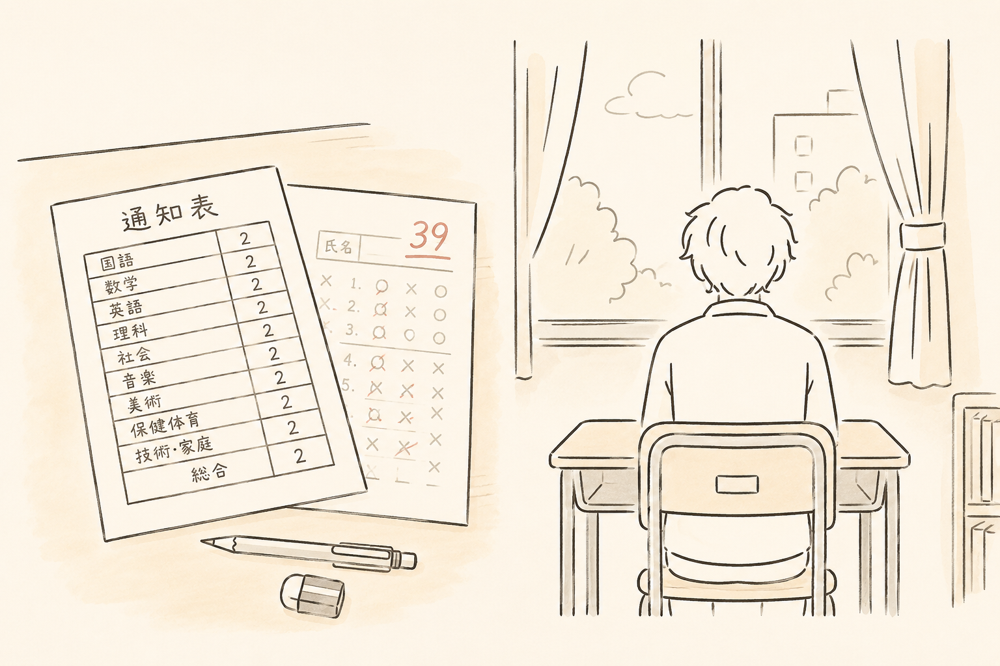
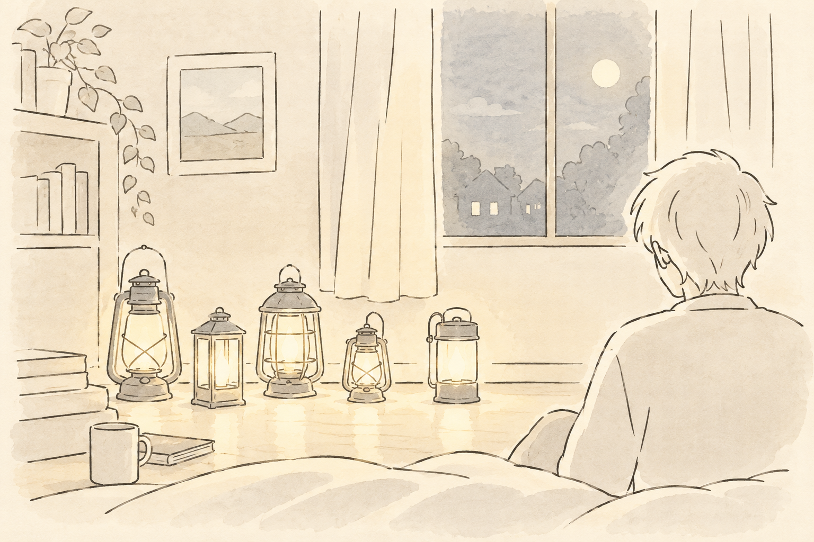
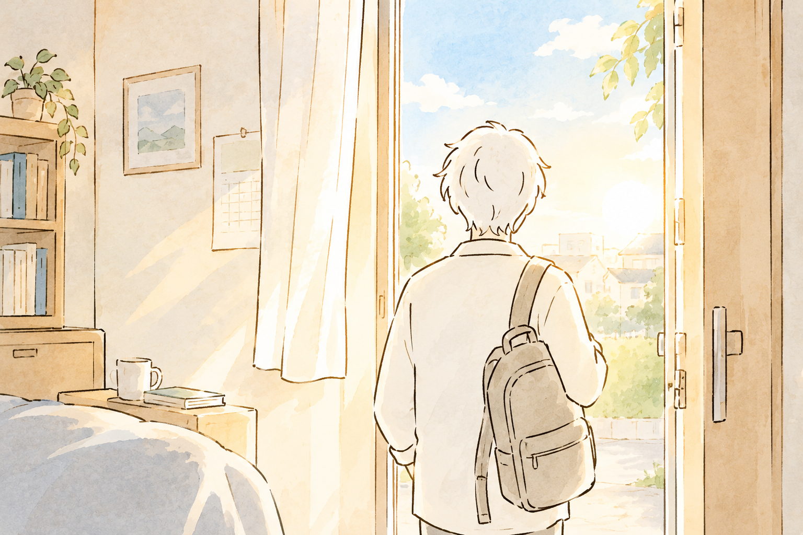

なぜ、私がここにいるのか。
通知表はオール2。
頑張っても、報われないと思っていた。
それでも今、こうして「働きたい」に向き合う仕事をしています。
30回
近く落ちた
アルバイトの面接
アルバイトの面接
60人分
毎月組んでいた
介護現場のシフト
介護現場のシフト
月6〜7回
こなしていた
夜勤の回数
夜勤の回数
1年間
SNSから離れた
心のシャットダウン
心のシャットダウン
通知表はオール2。
頑張っても、報われないと思っていた。
それでも今、こうして「働きたい」に向き合う仕事をしています。
通知表はオール2。家庭教師の先生にも「これは教えられない」と見放されたことがあります。テストで赤点を取っても、担任は「そっか…」とだけ言って、それ以上は何も言いませんでした。頑張っても報われないというのが、子どもの頃からの実感でした。
遅刻するくらいなら、休みたい。人前に出て注目を浴びるのが、怖くてたまらなかった。人の目を見て話そうとすると、かえって話の内容が頭に入ってこない。集団の中にいると、周りの様子まで拾いすぎてしまう。「気にしすぎる自分」を、ずっと持て余していました。
"向いてることなんて、
自分では分からない"
4人兄弟の長男でした。振り返ると、自分はあまり我慢をしてこなかった。自分が我慢しなかった分を、弟が背負っていたんじゃないかと、ずっと後になって気づきました。この気づきは今でも、誰かの「我慢してきた分」に目を向ける原点になっています。

高校の担任に「介護が向いているんじゃないか」と言われて、専門学校に進みました。自分で選んだというより、言われるがままだった。それでも実習をやり切り、介護福祉士の試験には一発で合格しました。
介護士としては、リーダー、そして介護長まで駆け上がりました。60人分のシフトを毎月組み、夜勤は月に6〜7回、ほぼ24時間体制。100人規模の飲み会の幹事まで引き受けていた時期もあります。頑張りすぎて、限界に気づけないタイプだったんだと思います。
"サボってるわけじゃないのに、
自分を責めていた"
回避癖から、仮病で休んでしまうことがありました。本当は限界だったのに、それを「サボり」だと自分で決めつけて、責め続けていました。
二人の上司から、暴言や陰口が続きました。何を言っても否定される。誰を信じていいか分からなくなる。安心して意見が言えない職場でした。眠れない夜が続いて、ある頃から、火を見ると心が落ち着くことに気づきました。

転職した先は、優しい職場でした。でもその優しさは「ぬるさ」でもあって、優しいだけでは解決しないことがあるのだと、また別の形で気づかされました。
SNSで出会った起業家と、AI事業に挑戦したことがあります。2ヶ月で1億インプレッションを達成できた時は、自信になりました。今思えば、あれは慢心でした。その勢いのまま挑戦権を得て、前の職場は即退職。
でも、介護しかしてこなかった自分は、新しい場所ではまったく通用しませんでした。「一番ヤバイヒト」とまで言われ、信頼を積み重ねられない自分を、初めて思い知らされました。出社するだけで動悸と吐き気がして、最終的には目標未達のまま早期退職。それから1年間、SNSにすら触れられなくなりました。
"頑張ってきたものから、
距離を置かざるを得なくなった"

そんな時に出会ったのが、就労移行支援という仕事でした。「心理的安全性」という考え方に、現場でずっと感覚的にやってきたことの名前がついた気がしました。今は、心理的安全性を土台にしたアドバイスやコーチングを、実践しています。
本が読めないタイプで、ゲームでも文字を飛ばしていた自分が、YouTube大学をきっかけに本に興味を持ち、Xを始めて「実は自分は文章を読める」と気づき、一冊を読み切れた瞬間がありました。自分には無理だと思っていたことが、できた。
お金を手にした時より、家族の笑顔を見た時の方が満たされる。そのことに気づいてから、何のために頑張るのかが、はっきりしました。アルバイトを30回近く落ち続けた頃、助けてくれた先輩がいました。あの時助けてもらった恩を、今度は誰かに返したい。それが今、この仕事を続けている一番の理由です。
私のところに来る方のほとんどが、最初は「相談するほどのことでもないかな」と思っています。うまく話せるか不安。何を話せばいいか分からない。私自身が、ずっとそうでした。
だから、うまく説明できなくて大丈夫です。気持ちだけ持ってきてください。整理するのは、私の仕事です。